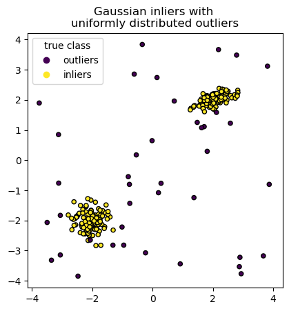
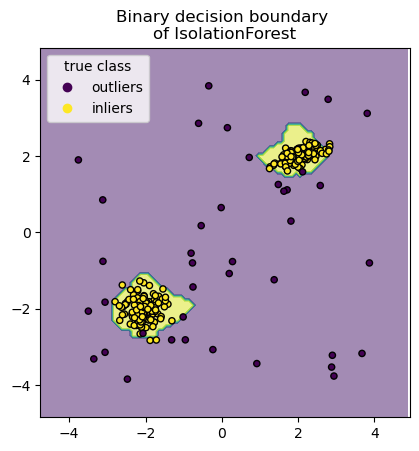
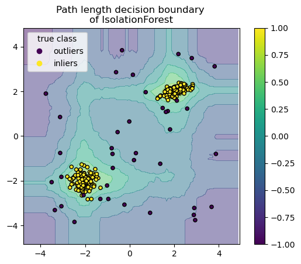
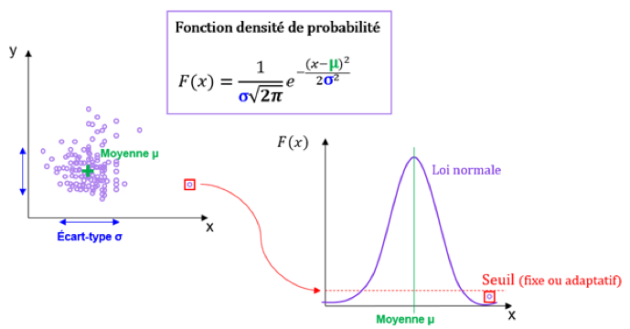

Isolation Forest — détecter des anomalies#
Pourquoi on a besoin d’un algorithme dédié aux anomalies ?#
La détection d’anomalies (outlier detection, anomaly detection) est un problème très courant en data science :
Fraude bancaire : repérer les transactions suspectes parmi des millions de transactions normales.
Maintenance prédictive : détecter un capteur ou une machine en train de défaillir avant la panne.
Cybersécurité : signaler une connexion inhabituelle qui pourrait être une attaque.
Contrôle qualité : identifier les produits défectueux sur une chaîne de production.
Santé : repérer une analyse biologique anormale parmi des milliers de patients.
Le point commun de tous ces problèmes :
Les anomalies sont rares (typiquement < 1% des données).
On ne sait pas toujours à l’avance à quoi ressemble une anomalie.
Les classes sont extrêmement déséquilibrées — la classification classique est inadaptée.
L’analogie à garder en tête : imagine une usine qui produit des boîtes de conserve. 99,9% sont conformes, 0,1% sont défectueuses (trop lourdes, trop légères, étiquette mal placée…). Si tu entraînes un classifieur classique sur ces données, il apprendra surtout à dire « c’est conforme » (puisque c’est presque toujours vrai). Tu as besoin d’un outil spécifique qui cherche activement ce qui « ne ressemble pas au reste », sans avoir besoin d’exemples d’anomalies pour s’entraîner.
C’est exactement ce que fait Isolation Forest.
Exemple#
Génération des données#
Pour illustrer Isolation Forest, on construit un dataset synthétique en 2D qui contient :
Un cluster sphérique de points « normaux » (tirés selon une loi normale centrée) → label
1.Un cluster ovale de points « normaux » (autre loi normale avec une forme allongée) → label
1.Des anomalies tirées uniformément dans tout l’espace → label
-1.
Note sur les labels : Isolation Forest (comme les autres détecteurs de scikit-learn) utilise la convention
+1pour les points normaux et-1pour les anomalies. C’est différent des classifieurs classiques (qui utilisent 0 et 1). Un piège classique quand on compare des métriques entre les deux !
import numpy as np
from sklearn.model_selection import train_test_split
n_samples, n_outliers = 120, 40
rng = np.random.RandomState(0)
covariance = np.array([[0.5, -0.1], [0.7, 0.4]])
cluster_1 = 0.4 * rng.randn(n_samples, 2) @ covariance + np.array([2, 2]) # oval
cluster_2 = 0.3 * rng.randn(n_samples, 2) + np.array([-2, -2]) # spherical
outliers = rng.uniform(low=-4, high=4, size=(n_outliers, 2))
X = np.concatenate([cluster_1, cluster_2, outliers])
y = np.concatenate(
[np.ones((2 * n_samples), dtype=int), -np.ones((n_outliers), dtype=int)]
)
X_train, X_test, y_train, y_test = train_test_split(X, y, stratify=y, random_state=42)
Visualisation#
Toujours regarder ses données avant d’entraîner un modèle. On utilise un scatter plot 2D, coloré par label, pour voir où sont les deux clusters normaux et où se dispersent les anomalies.
À observer : les anomalies (label
-1) sont visuellement « loin » des clusters normaux. Un Isolation Forest devrait les repérer facilement.
import matplotlib.pyplot as plt
scatter = plt.scatter(X[:, 0], X[:, 1], c=y, s=20, edgecolor="k")
handles, labels = scatter.legend_elements()
plt.axis("square")
plt.legend(handles=handles, labels=["outliers", "inliers"], title="true class")
plt.title("Gaussian inliers with \nuniformly distributed outliers")
plt.show()

Apprentissage#
L’entraînement d’un Isolation Forest se fait avec .fit(X) — sans passer de labels. C’est un algorithme non-supervisé : il apprend juste à identifier ce qui « ne ressemble pas au reste » à partir des données brutes.
Les hyperparamètres principaux :
max_samples: nombre d’échantillons utilisés pour construire chaque arbre. 100 est une valeur classique pour de gros datasets.contamination: proportion estimée d’anomalies dans les données. Par défaut'auto', mais c’est souvent utile de la fixer à la main (par exemple0.1si on estime 10% d’anomalies).n_estimators: nombre d’arbres dans la forêt (100 par défaut).
from sklearn.ensemble import IsolationForest
clf = IsolationForest(max_samples=100, random_state=0)
clf.fit(X_train)
IsolationForest(max_samples=100, random_state=0)In a Jupyter environment, please rerun this cell to show the HTML representation or trust the notebook.
On GitHub, the HTML representation is unable to render, please try loading this page with nbviewer.org.
IsolationForest(max_samples=100, random_state=0)
Frontières de décision#
Pour visualiser ce que le modèle a appris, on dessine ses frontières de décision : pour chaque point de l’espace 2D, on demande au modèle « est-ce une anomalie ? » et on colorie le résultat. On utilise DecisionBoundaryDisplay.
Lecture attendue : la zone colorée « anomalie » devrait englober tout ce qui est loin des deux clusters normaux. On voit visuellement si l’algorithme a bien compris la structure des données.
import matplotlib.pyplot as plt
from sklearn.inspection import DecisionBoundaryDisplay
disp = DecisionBoundaryDisplay.from_estimator(
clf,
X,
response_method="predict",
alpha=0.5,
)
disp.ax_.scatter(X[:, 0], X[:, 1], c=y, s=20, edgecolor="k")
disp.ax_.set_title("Binary decision boundary \nof IsolationForest")
plt.axis("square")
plt.legend(handles=handles, labels=["outliers", "inliers"], title="true class")
plt.show()

Longueur des chemins de décision — le score continu#
Au lieu d’un verdict binaire (« anomalie » / « pas anomalie »), Isolation Forest peut donner un score continu de « normalité ». En utilisant response_method="decision_function", on obtient une mesure qui reflète à quel point un point est « normal » :
Score élevé (proche de 0 ou positif) → le point est au cœur d’un cluster normal.
Score faible (négatif) → le point est une anomalie probable.
🎯 Pourquoi le score continu est utile en pratique ?
En production, on ne veut pas juste un verdict binaire — on veut prioriser les cas à investiguer. Sur un système anti-fraude, on peut avoir 10 000 transactions « suspectes » par jour. On ne peut pas tout vérifier manuellement. Trier par score permet à l’équipe de fraude de commencer par les plus louches et de remonter vers les moins louches jusqu’à épuisement du temps disponible.
C’est aussi ce qui permet de tracer une courbe ROC ou précision-rappel pour évaluer le modèle : il faut un score continu pour pouvoir faire varier le seuil.
disp = DecisionBoundaryDisplay.from_estimator(
clf,
X,
response_method="decision_function",
alpha=0.5,
)
disp.ax_.scatter(X[:, 0], X[:, 1], c=y, s=20, edgecolor="k")
disp.ax_.set_title("Path length decision boundary \nof IsolationForest")
plt.axis("square")
plt.legend(handles=handles, labels=["outliers", "inliers"], title="true class")
plt.colorbar(disp.ax_.collections[1])
plt.show()

Autres algorithmes de détection d’anomalies#
Scikit-learn propose plusieurs autres méthodes de détection d’anomalies. Voici les principales familles :
Méthodes basées sur la densité#
L’idée : un point est anormal s’il se trouve dans une zone peu dense — c’est-à-dire s’il a peu de voisins proches.
DBScan : algorithme de clustering qui étiquette en outliers les points qui ne sont dans aucun cluster dense. Il trouve lui-même le nombre de clusters (contrairement à K-Means), ce qui en fait un bon choix si on ne sait pas à quoi s’attendre.
LOF (Local Outlier Factor) : calcule pour chaque point le ratio entre sa densité locale et celle de ses voisins. Un point dans une zone beaucoup moins dense que ses voisins est suspect.
Limite de ces méthodes : elles ne marchent pas bien en haute dimension (la fameuse curse of dimensionality). En dimension > 20-30, toutes les distances se ressemblent et la notion de « densité locale » perd son sens.
Méthodes basées sur la reconstruction#
L’idée : on apprend un modèle qui compresse puis reconstruit les données. Les points qui ne peuvent pas être bien reconstruits sont anormaux.
PCA + reconstruction : on projette les données dans un espace réduit (ex : 10 composantes principales), puis on les « déprojette ». Un point reconstruit avec une grosse erreur est suspect.
Autoencodeurs (deep learning) : même principe mais avec un réseau de neurones. Plus puissant mais demande plus de données et de calcul.
Méthodes à « classe unique »#
L’idée : au lieu de détecter des anomalies comme « ce qui ne ressemble pas au reste », on apprend la frontière autour de ce qui est normal, et tout ce qui est dehors est anomalie.
One-Class SVM : un SVM qui apprend une « bulle » autour des données normales. Tout ce qui sort de la bulle est une anomalie.
Elliptic Envelope : variante qui suppose que les données normales suivent une distribution gaussienne multivariée et trace une ellipse autour.
Le tableau de choix#
Méthode |
Bon en haute dim ? |
Interprétable ? |
Cas d’usage typique |
|---|---|---|---|
Isolation Forest |
✅ |
Moyen |
Le choix par défaut, très généraliste |
DBScan |
❌ |
✅ (clusters visibles) |
Clustering + anomalies géographiques |
LOF |
❌ |
✅ |
Petits datasets avec structure locale |
PCA reconstruction |
✅ |
Moyen |
Données linéairement compressibles |
Autoencodeurs |
✅ |
❌ |
Gros datasets, structures complexes |
One-Class SVM |
Moyen |
❌ |
Petits datasets, frontière nette |
Elliptic Envelope |
❌ |
✅ |
Données gaussiennes |
🎯 Pour résumer — Isolation Forest en pratique#
Quand l’utiliser#
✅ Détection de fraude (bancaire, assurance) : énorme volume de données, très peu d’anomalies connues.
✅ Maintenance prédictive : détecter un équipement qui « sort de son comportement normal ».
✅ Cybersécurité : repérer des connexions, requêtes ou volumes de trafic inhabituels.
✅ Contrôle qualité industriel : identifier les pièces défectueuses dès la production.
✅ Détection de bugs en prod : un log de comportement applicatif qui diffère du profil normal.
Quand ne pas l’utiliser#
⚠️ Quand tu as des labels d’anomalies → utilise plutôt un classifieur supervisé (
RandomForest,XGBoost) avecclass_weight='balanced'. Un modèle supervisé bat presque toujours un détecteur non supervisé quand tu as les labels.⚠️ Quand les anomalies sont « contextuelles » (une valeur peut être normale dans un contexte et anormale dans un autre) → Isolation Forest n’a pas de notion de contexte, il faut ajouter explicitement les features contextuelles.
⚠️ Pour des séries temporelles → utilise plutôt des méthodes dédiées (détection de ruptures, Prophet, modèles de séries temporelles avec résidus).
Les pièges à éviter#
⚠️ Fixer
contaminationau hasard → un mauvais choix fausse tout. Estime-le à partir de ton contexte métier ou par essais successifs.⚠️ Oublier que les labels sont
+1/-1(et non 0 / 1 comme en classification classique). Un bug classique quand on calcule des métriques.⚠️ Évaluer avec de l’accuracy → sur 99% de normaux, dire toujours « normal » donne 99% d’accuracy. Toujours utiliser précision, rappel, F1 ou PR-AUC sur la classe « anomalie ».
⚠️ Ne pas visualiser le score avant de décider → souvent, un simple histogramme des scores révèle un seuil naturel (une vallée dans la distribution) bien meilleur que le seuil par défaut.
Le geste en code#
from sklearn.ensemble import IsolationForest
# On estime 1% d'anomalies dans les données
clf = IsolationForest(contamination=0.01, random_state=42, n_jobs=-1)
clf.fit(X_train)
# Prédiction binaire : +1 = normal, -1 = anomalie
predictions = clf.predict(X_test)
# Score continu : plus c'est bas, plus c'est anormal
scores = clf.decision_function(X_test)
# Trier du plus suspect au moins suspect
suspicious_idx = scores.argsort()[:50] # les 50 plus suspects
Le mot de la fin#
Isolation Forest est le détecteur d’anomalies « couteau suisse » de scikit-learn. Il est simple, rapide, efficace en haute dimension, et demande très peu de tuning. Pour 80% des cas de détection d’anomalies non supervisées, c’est le premier algo à essayer. Et si tu as des labels d’anomalies, n’oublie pas de comparer avec un classifieur supervisé — tu pourrais être surpris par l’écart.
Comment fonctionne Isolation Forest ?#
IsolationForestest un ensemble d’arbres de décision conçus pour « isoler » les anomalies très tôt dans la hiérarchie de chaque arbre.L’idée clé#
Pour séparer un point du reste, on fait des coupes aléatoires dans l’espace. Chaque arbre choisit au hasard :
une variable ;
un seuil entre le min et le max de cette variable ;
…et découpe les données en deux groupes. Puis il recommence récursivement jusqu’à ce que chaque point soit isolé dans une cellule à lui tout seul.
Pourquoi ça marche pour les anomalies ?#
Le score d’anomalie#
On entraîne plusieurs arbres (une « forêt ») et on moyenne la profondeur d’isolation pour chaque point. Les points isolés systématiquement tôt dans une majorité d’arbres obtiennent le score d’anomalie le plus élevé.

Forces d’Isolation Forest#
✅ Non-supervisé : pas besoin d’exemples d’anomalies pour s’entraîner. Il apprend juste à partir de données « normales ».
✅ Efficace en haute dimension (contrairement aux méthodes basées sur la densité comme DBScan).
✅ Scalable : complexité linéaire en nombre d’échantillons.
✅ Simple à utiliser : très peu d’hyperparamètres à régler (essentiellement
contamination, la proportion estimée d’anomalies).✅ Robuste : pas besoin de normaliser les données (on coupe par seuils, comme les arbres de décision classiques).
Limites à connaître#
⚠️ Ne marche pas sur des anomalies « complexes » qui ne sont pas isolables par coupes axiales (par exemple une anomalie entourée d’un cluster normal).
⚠️ L’hyperparamètre
contaminationdoit être estimé à l’avance — s’il est faux, le modèle surestimera ou sous-estimera le nombre d’anomalies.⚠️ Moins performant que des modèles supervisés quand on a des exemples d’anomalies labellisés (dans ce cas, on préfère un classifieur avec
class_weight='balanced'ou du sur-échantillonnage).